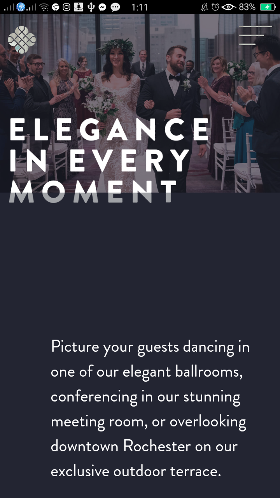
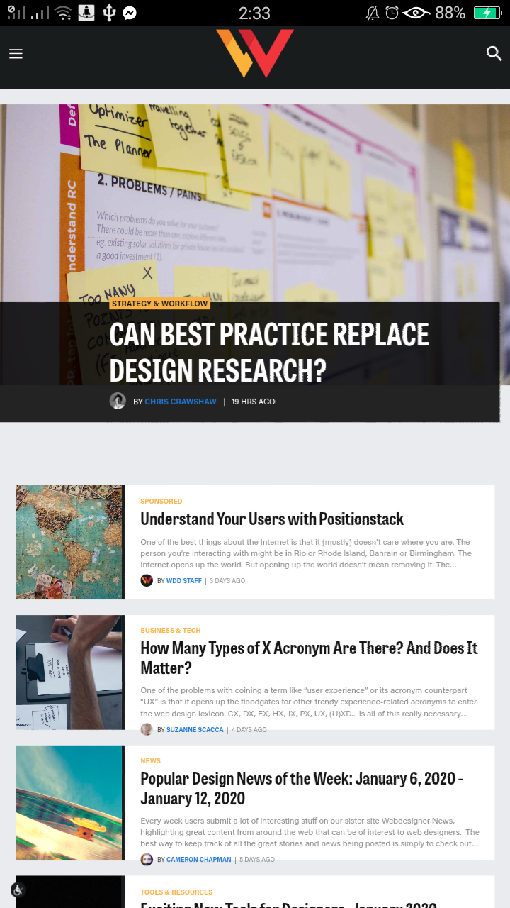

Design Principles Document
PARC Proximity
J.POWERS Wedding Event site

Grouping related elements together are what proximity's goal.
The title and the description of this website have space but they still communicate with each other.
The title emphasizes by its font size and description explain the title by using lower capital and smaller font size.
PARC Alignment
Web Design Blog

Unity is important concept in design. In this page we can see that text and images are align, even its title.
Rob William said in his book entitled by The Non-Designer's Design Book 4th ed. that "Even if the separate elements are not physically close on
the page, they can appear connected, related, unified with other information simply by their placement"
PARC Contrast
HeyTempo Agency
This two design of the page gives contrast to each other. It gives the user information
and avoids the confusion which button side they will click for applying for jobs or to hiring an employee